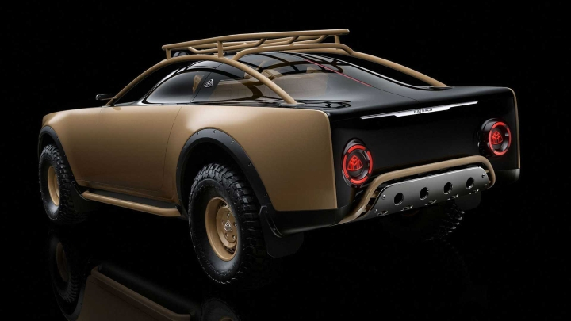

The Mercedes-Benz S-Class Maybach Virgil Abloh Offroad Edition, also known as Project MAYBACH,
is a unique concept that resulted from a collaboration between the late fashion designer Virgil Abloh and Mercedes-Benz. This edition is a distinct blend of luxury and rugged off-road capability, showcasing Abloh's innovative design philosophy.
Exterior and Design:The vehicle features a striking two-tone color scheme with a glossy Obsidian Black upper portion and a sand-colored lower section.
It includes special forged rims and other unique design elements. The overall aesthetic combines luxury with a rugged, off-road-ready appearance
(Mercedes-Benz Brand Experience) (Mercedes-Benz USA).
Interior:The interior continues the two-tone theme with black and sand-colored Nappa leather.
It has a four-seat configuration with high-pile floor mats, bespoke user interfaces, and the distinctive Mercedes-Maybach and Virgil Abloh logos
inscribed in various locations. This interior setup ensures both comfort and exclusivity (V Magazine).

Special Features:Only 150 units of this limited-edition vehicle are available globally.
Each purchase includes exclusive items such as a custom-made wooden box covered in sand-colored Nappa leather,
a 1/18 scale replica of the car, car keys, and a carabiner hook. A bespoke car cover featuring the collaboration's logos is also part of the package
(V Magazine).
Legacy and Capsule Collection:The Project MAYBACH initiative also includes a capsule collection designed by Virgil Abloh in collaboration
with Off-White. This collection features items like vintage washed cotton t-shirts, fleece crewnecks, hoodies, canvas baseball caps,
and racing gloves, all adhering to the project's sand color scheme (V Magazine).
The Project MAYBACH concept not only highlights the creative synergy between fashion and automotive design but also sets a new standard for
luxury vehicles with an off-road capability (YouTube).
Dive into the MotorVault
Wise words from the author:
"Cars are not just transportation; they're an expression of freedom and a gateway to adventure,
so why stay locked in the vault when you can break free and feel the thrill."